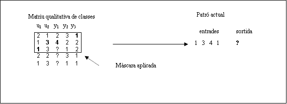
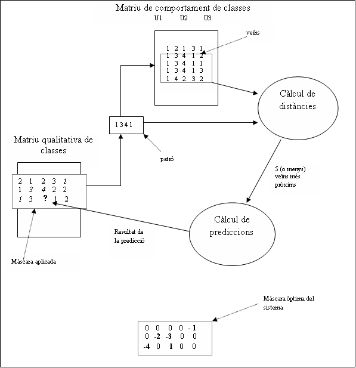

|
| VisualFIR |
Pantalla de predicció
El mètode de predicció del FIR es basa en la regla del k-nearest neighbour (k veïns més propers). El procediment és el següent:
Es situa la màscara òptima a partir de la primera fila de la matriu qualitativa de classes, i s’obté un patró de la mateixa manera com els obteníem per construir les matrius d’entrada/sortida, però ara només ens fixarem en els valors que coincideixin amb els m-inputs. L’anomenarem patró d’entrades actual.

Es seleccionen els patrons d’entrades de la matriu de comportament de classes, que coincideixin amb el nostre patró. Aquest patrons s’anomenen veïns.
Es calcula la distància de cada patró veí de la matriu de comportament amb el patró actual.
Per poder comparar els valors d’entrada de les matrius de comportament, amb els valors d’entrada actuals, s’obté un valor quantitatiu normalitzat entre 0 i 1 que permet comparar variables amb rangs diferents. Aquesta normalització depèn de la pertinença i el valor de costat.
Haurem d’obtenir aquest valor quantitatiu per cadascuna de les variables que intervenen en l’entrada.
Per cada variable del patró:
Per les classes centrals
Pi= costati * B * sqrt(ln Pertinençai ) + 0.5
on B= (4*ln0.5)-1/2
Per les classes dels extremes:
la petita: pi = C * sqrt(ln Pertinença i )
la gran : pi =1- C * sqrt(ln Pertinença i )
on C = (ln0.5)-1/2
Els valors pi corresponents a diferents variables d’un estat d’entrada són concatenats per a formar un vector de la forma:
p = [p1,p2, ... , pj]
Amb el vector de la nova entrada i els vectors obtinguts de la matriu d’entrada/sortida es calcula una distància mitjançant la normal L2. La distància per cadascun dels veïns serà:
dveí = || pactual – pveí ||2 = sqrt(åi=1,n (pi actual – pi vei)2)
on n és el número de variables d’entrada.
Els 5 vectors (o veïns) amb una distància inferior són els anomenats 5 veïns més propers, i serà sobre aquests que es farà la predicció de la sortida del patró actual. Si no hi ha cap veí a la matriu de comportament, llavors no es pot predir la sortida. Si hi ha menys de 5 veïns, llavors es fa la predicció amb els que tinguem.
Es calculen els pesos absoluts de cada veí. Hi ha diferents fórmules per calcular els pesos absoluts. Seguidament les exposem:
Fórmula de l’Àngela:
La primera de les fórmules, aplica un càlcul diferent depenent de si hi ha algun dels veïns que té distància 0 o no.
Si cap dels veïns te distància 0, llavors:
PesAbsolutveí = ( dmax2– dveí2)/dmax*dveí
On dmax és el veí amb la distància més gran.
Si algun dels veïns te distància 0, llavors:
Fórmula de Budapest:
La segona fórmula, aplica una distància quasi 0 als veïns que tenen distància 0.
Si dveí = 0 -> dveí=épsilon
PesAbsolutveí = 1/(dveí/åi=1,nºveins dveíi)
Fórmula de Màlaga:
La tercera fórmula es basa en el veí de distància més gran.
On dmax és el veí amb la distància més gran.
Encara hi ha una altra fórmula que permet a l’usuari aplicar un factor x, que doni més o menys pes als veïns més propers (aquesta no està implementada).
PesAbsolutveí = ((dmax – dveí)/dmax)x
Si x és gran, dona més pes als veïns més pròxims.
Si x és petita, iguala els pesos de tots els veïns.
Seguidament es calculen els pesos relatius:
SumaPesos = å"veí PesAbsolutveí
PesRelatiuveí = PesAbsolutveí/SumaPesos
Aquests pesos relatius son valors entre 0 i 1, i tots sumats, sumen 1,per tant els pesos relatius es poden interpretar com percentatges.
Així doncs, el valor normalitzat de la sortida es pot calcular com la suma de les sortides de cadascun dels 5 veïns més propers.
SortidaNormactual = å"veí PesRelatiuveí *(Classesortida veí + Pertinençasortida veí)
On Pertinençasortida veí és el normalitzat.
Llavors ja es poden obtenir els valors normalitzats de la sortida pel patró d’entrades actual:
Classesortida actual = ë SortidaNormactual û
Pertinençasortida actual = SortidaNormactual - Classesortida actual
Finalment, aplicant la fórmula inversa a la utilitzada en la normalització, obtindrem el valor de sortida de classe, de pertinença i de costat.
Es desplaça la màscara una fila cap avall de les matrius de dades qualitatives i es torna a repetir tot el procés.
El procés es repetirà fins a arribar al final de la matriu de dades qualitatives. El nombre de prediccions que com a màxim es pot realitzar es:
Nº prediccions = nº files matriu dades entrada – profunditat de la màscara +1Diem com a màxim perquè pot ser no es trobi cap veí per algun patró actual d’entrades i llavors no es pot fer la predicció.
Tampoc es podrà fer la predicció si alguna variable que intervé en el patró actual conté el valor missing de la mostra.
Al final d’aquesta fase disposem, doncs, de la matriu dels valors predits que hem simulat a partir de la matriu de dades qualitatives i de la màscara òptima. Recordem que aquesta matriu de valors predits està encara descrita en valors qualitatius, amb valors de pertinença i costat obtinguts partint del comportament anterior del sistema (el reflexat a les matrius de comportament).
Esquema del procés de predicció difusa:

Nom del fitxer d’entrada del model. El nom per defecte d’aquest fitxer, és el que s’ha posat com a sortida de la pantalla anterior (Pantalla de modelatge). La modificació del nom del fitxer, es permet per si es vol predir algun model estudiat prèviament. Quan es prem el boto de Predicció, si el fitxer no existeix, es restaura automàticament el nom del fitxer anterior.
Nom del fitxer d’entrada de dades de la pantalla. El nom per defecte d’aquest fitxer, és el que s’ha posat com a sortida de la pantalla de dades de predicció. La modificació del nom del fitxer, es permet per si es vol predir noves dades. Quan es prem el boto de Predicció, si el fitxer no existeix, es restaura automàticament el nom del fitxer anterior.
Nom del fitxer de sortida de la predicció. El nom per defecte d’aquest fitxer és: FDadesPrediccio.mat i es pot modificar amb qualsevol nom que permeti el sistema operatiu.
Boto que inicia la predicció de les dades del fitxer d’entrada de variables amb el model i guarda el resultat al fitxer de sortida. Per fer la predicció de les dades s’utilitza la funció Forecast.dll de FIR, implementada en C.
Crida a la finestra de paràmetres per configurar els paràmetres útils per aquesta pantalla.
|
| Visualització del model | Regeneració |
|
|
| Dades de test |